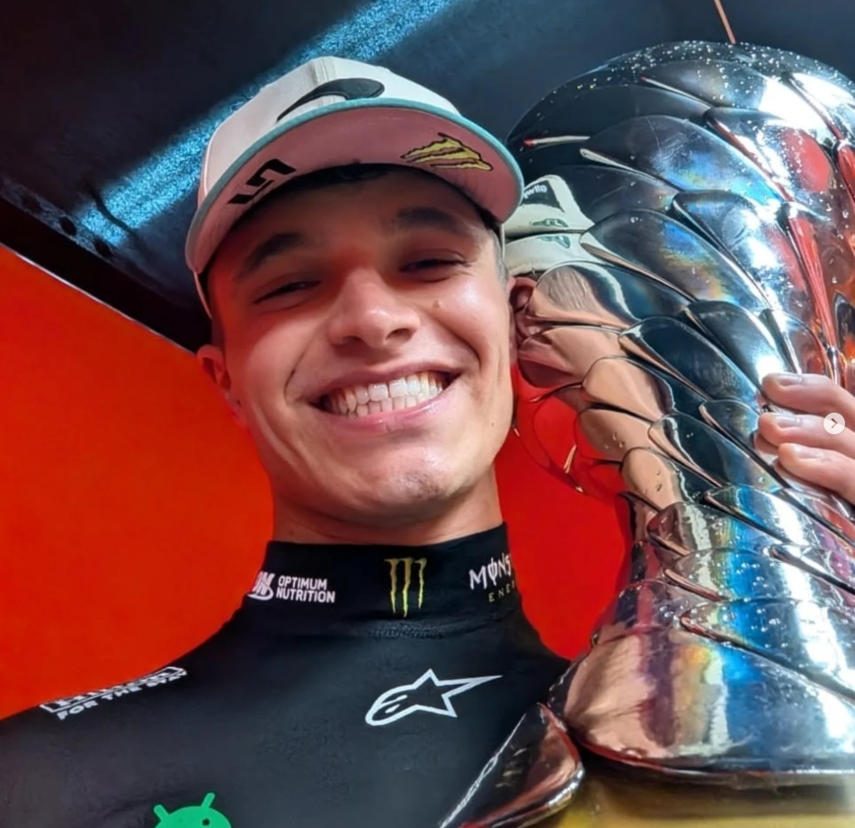

Norris makes candid admission after being booed again in Brazil
Lando Norris was once again booed at the end of the Brazil GP, just as he was following his victory in Mexico two weeks ago.
During the usual post-race interviews, the Brazilian crowd cheered and showed their appreciation for Max Verstappen and Kimi Antonelli, who finished third and second respectively, but the winner received far from a warm welcome.
"You still hear it, it's not the nicest thing" - Lando Norris
Talking about the boos on the podium, the McLaren driver admitted he'd struggled with this kind of negativity in the past, but says he's learned to deal with it a lot better in recent months.
"You still hear it, it's not the nicest thing," he said after the race. "I think it's something I've done well over the last few months. I cared a lot about people's perspective and how I'm portrayed and things in the media. And I probably cared too much.
"Even at the beginning of the year, I think I cared too much and it probably affected me in not the best ways. And I just learned to deal with those things better. Not by not caring, because I still always want to make a good impression and I never want to be rude or do those things.

He finally added: "I'll always try to make my point and say what I believe in because I think that's one of the things I've learned the most: just to be true to yourself, have confidence in yourself, believe in yourself, and speak your mind. It's more just keeping my head down and concentrating on myself."
Norris pulls away in the standings as Piastri falters
After securing pole in both the sprint qualifying and the main qualifying, and crossing the line first in the sprint race, the British driver once again demonstrated his superiority in the Brazil GP, taking 25 crucial points that carry huge weight in the championship battle.
With three races to go, and thanks to a penalty handed to his teammate, Norris now holds a significant lead to manage, while Max Verstappen finds himself increasingly out of the title fight despite an impressive comeback from the pit lane to the podium.